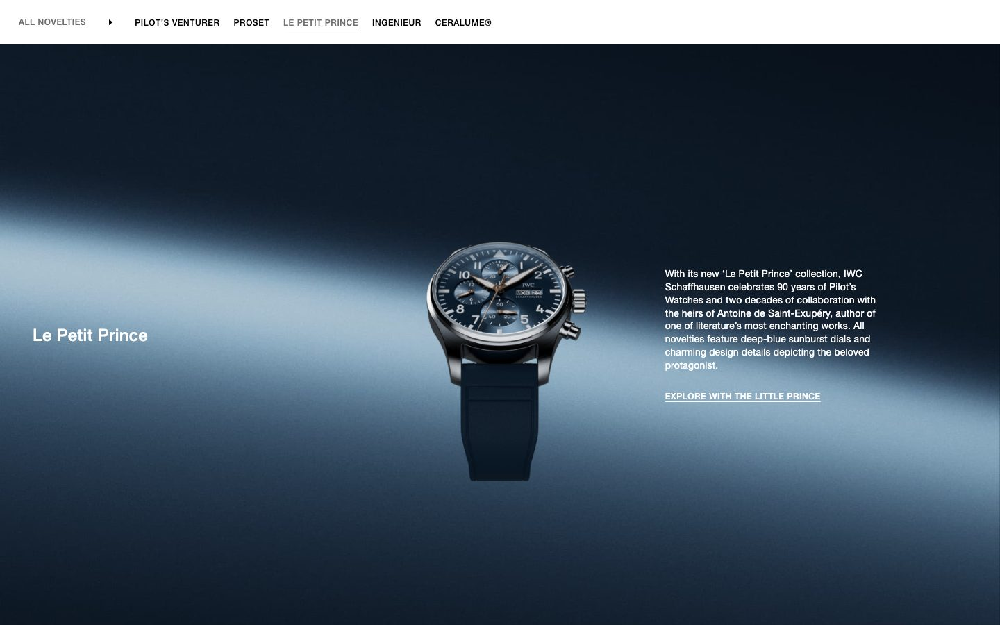
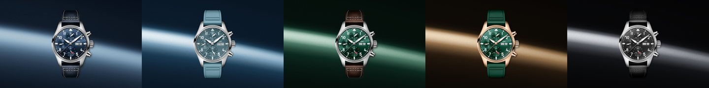
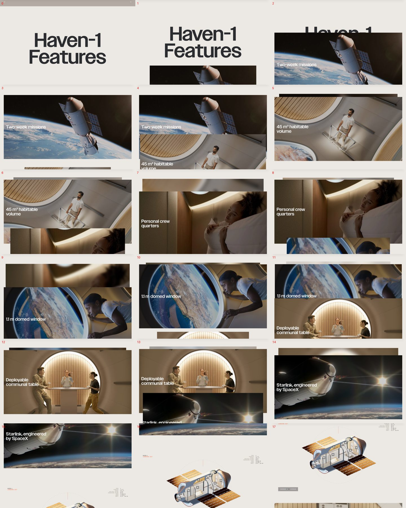
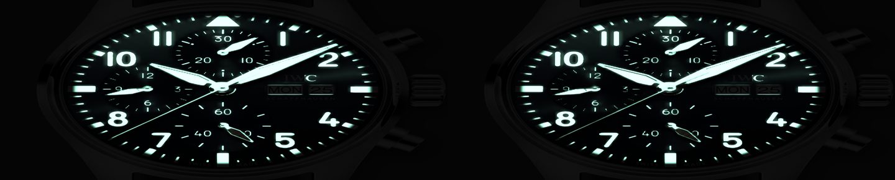
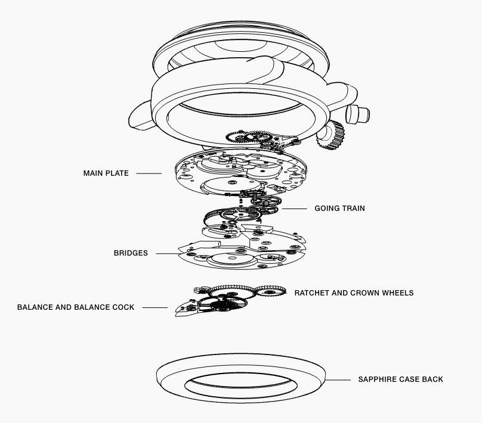
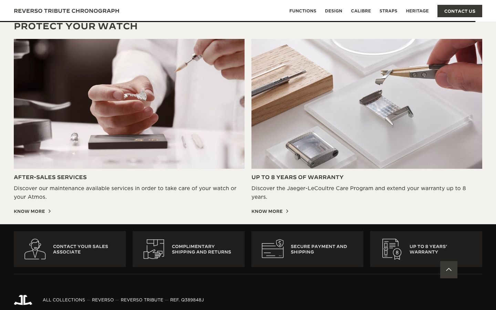
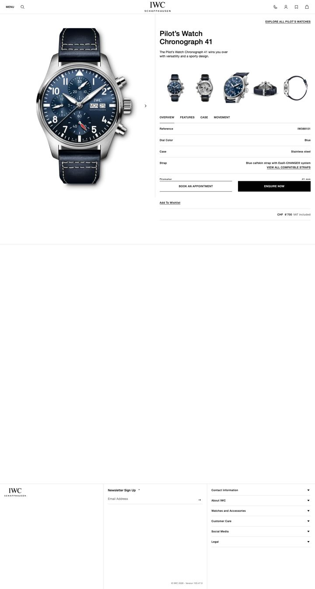

Moodboard · Open the concept · First version
Pilot’s Watch Chronograph 41
A standard IWC product page with three creative moments, each built from IWC’s own material: the Watches and Wonders 2026 skies, the master packshots and the product photography.

IWC · Watches and Wonders 2026
“Engineered for the Next Space Age”, with IWC’s partner Vast. One watch centred on a navy sky, the name on the left, one paragraph on the right. The variations showroom uses the same layout.

One sky per dial
IWC’s sky recoloured from its own light: navy for the blue dial, ice for the light blue rubber, forest for green, graphite for black, bronze for 5N gold. Sliding between watches blends the skies.

Vast · Haven-1 Features
A title pinned in the middle, then full-width cards rising and docking, each leaving a sliver of the previous one. The features section uses the same choreography.

Real packshots, relit
The cards render IWC’s 3000 × 4000 master packshots through a shader: a reflection crosses the sapphire, highlights follow the steel, and on the dial card the lights go out so the hands and numerals glow.

A real movement, drawn
The Movement tab explodes a real CAD model: the ETA 6498-1 published on GrabCAD by Steen Winther, rendered as a technical drawing. It is a stand-in. In production, IWC’s own CAD of calibre 69385 would take its place.

Jaeger-LeCoultre · Product page
The lower half of a JLC product page: editorial chapters, the selection, then two image cards for after-sales and warranty above a reassurance strip. The collection, heritage and services sections follow that order.

IWC · Current product page
Kept as the standard: header, footer, the split purchase area, specification tabs, services, square uppercase buttons and Helvetica Neue at IWC’s sizes.